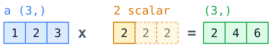
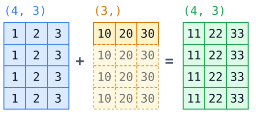
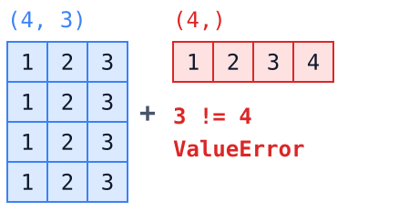
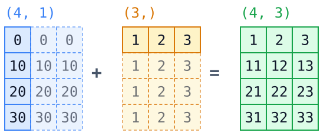

NumPy
다차원 배열 연산 및 행렬 제어
충북대학교 지능로봇공학과 문성태 교수
What is NumPy
파이썬을 수치 계산 언어로 만든 라이브러리
Who
- Travis Oliphant
2005년 초판 공개 - 뿌리 — Numeric(1995), Numarray(2001) 통합
- 지금 — NumFOCUS 가 후원하는 커뮤니티 개발
Why
- 문제
파이썬 리스트는 크고 느리다 - 해법
연속 메모리에 담고 연산은 C 로 - 결과
루프 없이 배열 전체를 한 번에 계산
Where
- 기반
SciPy, Pandas, scikit-learn, PyTorch - 사례
LIGO 중력파 검출 - 라이선스
BSD 3-Clause, 상업적 사용 자유
버전 — 1.0 은 2006년, 2.0 은 2024년. 이 강의는 2.x 기준이다.
Why NumPy
파이썬 리스트
a = [1, 2, 3] a * 2
원소마다 파이썬 객체라 메모리가 크고, 계산은 for 루프로 돌아야 한다.
NumPy 배열
a = np.array([1, 2, 3]) a * 2
같은 타입을 연속된 메모리에 두고, C로 구현된 연산이
배열 전체에 한번에 적용된다.
Pandas, scikit-learn, OpenCV, PyTorch가 모두 NumPy 배열을 기본 자료구조로 쓴다. 데이터 분석의 공통 언어다.
성능 비교 데모
import numpy as np from time import perf_counter as t n = 1_000_000 xs = list(range(n)) arr = np.arange(n) s = t(); sum(xs); py = t() - s s = t(); arr.sum(); nu = t() - s print(f"{py/nu:.0f}배 빠름")
- 같은 계산인데 10배 이상 차이가 난다
- 데이터가 커질수록 격차가 벌어진다
- 메모리도 약 4배 이상 절약된다
- 핵심은 for 루프를 배열 연산으로 바꾸는 것
숫자는 환경마다 다르다. 중요한 것은 절대값이 아니라 자릿수가 달라진다는 사실이다.
ndarray 기본
같은 타입의 숫자를 연속된 메모리에 담은 상자.
- 모든 원소가 같은 dtype을 갖는다
- 크기가 생성 시 정해진다 (append는 새 배열 생성)
- 데이터 본체 + shape 정보로 구성된다
- 1차원은 벡터, 2차원은 행렬, 3차원 이상도 가능
a = np.array([[1, 2, 3], [4, 5, 6]]) a.shape a.dtype a.ndim
센서 로그로 치면 행은 시간, 열은 채널이 된다. (샘플 수, 3축)
배열 생성
np.array([1, 2, 3]) np.zeros((2, 3)) np.ones((2, 3)) np.full((2, 2), 7) np.eye(3) # 단위행렬 np.empty((2, 2)) # 초기화 안 함
np.arange(0, 10, 2) np.linspace(0, 1, 5)
- zeros, ones, full은 shape을 튜플로 받는다
- arange는 간격, linspace는 개수를 지정
- 길이를 아는 배열은 미리 만들고 채우는 편이 빠르다
- dtype 인자로 타입을 명시할 수 있다
난수 배열
rng = np.random.default_rng(42) rng.random((2, 3)) # 0 이상 1 미만 균등 rng.normal(0, 1, size=100) # 평균 0, 표준편차 1 rng.integers(1, 7, size=10) # 주사위 10번
- 최신 방식은 default_rng 제너레이터
- 씨드를 고정해야 결과가 재현된다
- np.random.seed 는 구식 API
- 실습용 합성 센서 데이터를 만드는 데 쓴다
논문이나 보고서에 넣을 실험은 씨드를 반드시 기록한다. 재현되지 않는 결과는 결과가 아니다.
연습문제 1
왼쪽 칸에 u, 오른쪽 칸에 g 의 히스토그램을 bins=30 으로 그리고 각각 제목을 붙이시오. 그린 뒤 표본 수와 bins 를 바꿔 모양이 어떻게 달라지는지 확인한다.
import matplotlib.pyplot as plt u = rng.uniform(0, 1, 5000) # 균등분포 g = rng.normal(0, 1, 5000) # 정규분포 fig, ax = plt.subplots(1, 2, figsize=(9, 3)) # IMPLEMENT HERE
기대 결과 — 왼쪽은 0 과 1 사이가 고르게 채워진 평평한 막대, 오른쪽은 0 을 중심으로 한 종 모양. 두 칸은 ax[0], ax[1]
배열 속성
a = np.zeros((2, 3), dtype=np.float32) a.shape a.ndim a.size a.dtype a.itemsize a.nbytes
디버깅 첫 줄
배열 코드가 이상하면 먼저 shape과 dtype을 찍어본다. 오류의 절반은 이 둘 중 하나다.
print(a.shape, a.dtype)
센서 로그처럼 양이 많은 실수 데이터는 float32만 써도 충분하다. 메모리가 절반으로 줄어든다.
dtype과 형변환
형변환
a = np.array([1, 2, 3]) a.dtype a.astype(np.float64) c = np.array([1.9, 2.9]) c.astype(np.int32)
astype 은 항상 새 배열 생성. 제자리 변환 아님
실수에서 정수로는 버림. 반올림이 필요하면 np.round 를 먼저 적용
오버플로우
x = np.array([127], dtype=np.int8) x.dtype x + 1
정수 타입은 표현 범위 고정. 범위를 넘으면 값이 순환
센서 원시값처럼 작은 정수형을 다룰 때 특히 주의
연습문제 2
a 는 np.array([125, 126, 127], dtype=np.int8) 이다. a + 1 이 [126, 127, 128] 이 되지 않는 원인을 찾고, 배열 a 를 고쳐 마지막 줄이 True 가 되게 하시오.
a a + 1 np.array_equal(a + 1, [126, 127, 128]) # IMPLEMENT HERE np.array_equal(a + 1, [126, 127, 128])
힌트 — a.dtype 과 np.iinfo(np.int8) 로 이 타입이 담을 수 있는 범위를 먼저 확인한다 · 기대 출력 — 마지막 줄 True
인덱싱과 슬라이싱
a = np.arange(12).reshape(3, 4) a a[0, 2] a[1] a[:, 1] a[0:2, 1:3] a[-1, -1]
- 콤마로 축을 구분한다
- 리스트의 a[0][2] 와 달리 한 번에 접근한다
- : 는 해당 축 전체를 뜻한다
- 음수 인덱스는 뒤에서부터 센다
뷰(view) 와 복사(copy)
슬라이싱은 뷰다
a = np.arange(5) b = a[1:4] b[0] = 99 a
b를 고쳤는데 a가 변경된다. 메모리를 공유하기 때문이다.
copy()로 끊는다
a = np.arange(5) c = a[1:4].copy() c[0] = 99 a
원본을 지켜야 한다면 반드시 copy()를 명시한다.
슬라이싱은 뷰, 팬시 인덱싱과 불리언 마스킹은 복사를 돌려준다. 이 차이가 버그의 단골 원인이다.
연습문제 3
data 는 (100, 100) 흑백 이미지다. 원본을 50x50 사분면 넷으로 나눠 자리를 섞어 놓았다. 슬라이싱 대입만 으로 원래 그림을 복원하시오.
import matplotlib.pyplot as plt fix = data.copy() # IMPLEMENT HERE fig, ax = plt.subplots(figsize=(4, 4)) ax.imshow(fix, cmap="gray", vmin=0, vmax=1)
먼저 그대로 실행하면 섞인 그림이 보인다. 어느 사분면이 어디로 갔는지는 그 그림을 보고 판단한다 · 기대 결과 — 복원하면 숫자 7 모양이 나온다
팬시 인덱싱
a = np.array([10, 60, 30, 40, 20]) idx = [4, 0, 2] a[idx] order = np.argsort(a) order a[order]
- 정수 배열로 원하는 순서 구성
- 같은 인덱스를 여러 번 사용 가능
- 결과는 항상 새 배열(복사)
- 2차원은 행 인덱스와 열 인덱스를 함께 전달
m = np.arange(12).reshape(3, 4) m[[0, 2], [1, 3]]
행 인덱스와 열 인덱스를 짝지어 (0, 1) 과 (2, 3) 위치의 값을 뽑는다
불리언 마스킹
temp = np.array([21.5, 88.0, 22.1, -40.0]) mask = (temp > -20) & (temp < 60) mask temp[mask] mask.sum() # 조건 만족 개수 (~mask).sum() # 이상치 개수
and / or 는 안 된다
temp > -20 and temp < 60
& | ~ 를 쓰고 각 조건을 괄호로 묶는다. 연산자 우선순위 때문에 괄호가 필수다.
연습문제 4
temp, hum, place 는 길이 12 이고 같은 인덱스끼리 대응한다. 30 <= temp <= 50 이면서 hum >= 40 인 지점의 이름을 구하시오.
temp
hum
place
# IMPLEMENT HERE
주어진 배열 — temp 온도(도씨), hum 습도(퍼센트), place 지점 이름 A 부터 L
· 기대 출력 — 조건을 만족하는 이름만 담긴 문자열 배열. 두 조건은 & 로 묶는다
where와 조건 처리
a = np.array([-3, 5, -1, 9]) np.where(a < 0, 0, a) # 음수를 0으로 np.clip(a, 0, 6) # 범위 밖을 잘라낸다 np.where(a < 0) # 조건을 만족하는 인덱스
- where(조건, 참일 때, 거짓일 때) 세 인자 형태
- 인자가 하나면 조건을 만족하는 인덱스를 돌려준다
- clip은 센서 사양 범위를 강제할 때 편하다
- if 문 대신 쓰는 배열용 조건문이라고 생각하면 된다
형태 변경
a = np.arange(12) a.reshape(3, 4) a.reshape(3, -1) # -1은 자동 계산 b = a.reshape(3, 4) b.ravel() # 1차원 뷰 b.flatten() # 1차원 복사 b.T # 전치
- reshape는 원소 개수가 맞아야 한다
- -1은 나머지 하나를 알아서 정하라는 뜻
- reshape와 T는 가능하면 뷰를 돌려준다
- ravel은 뷰, flatten은 복사로 기억한다
센서 데이터를 (샘플, 채널) 형태로 맞추는 작업이 전처리의 첫 단계다.
연습문제 5
wave 는 0 과 1 로만 채워진 길이 100 배열이다. (행, 열) 형태로 reshape 해 이미지로 그리면 사인파 한 주기가 보인다. reshape(10, 10) 을 알맞은 형태로 고치시오.
import matplotlib.pyplot as plt img = wave.reshape(10, 10) # IMPLEMENT HERE fig, ax = plt.subplots(figsize=(8, 2)) ax.imshow(img, cmap="gray_r", vmin=0, vmax=1)
조건 — 행 x 열 = 100 이 되는 조합만 가능하다 (1x100, 2x50, 4x25, 5x20, 10x10, ...) · 기대 결과 — 가로로 길게 누운 사인파 한 주기가 보이는 형태 하나뿐이다
축 추가와 제거
a = np.array([1, 2, 3]) a[:, np.newaxis] # 열벡터 a[np.newaxis, :] # 행벡터 np.expand_dims(a, axis=0) np.squeeze(np.zeros((1, 3, 1))) # 크기 1인 축 제거
- 브로드캐스팅 모양을 맞추려고 축을 늘린다
- None 은 np.newaxis 와 같다
- squeeze는 쓸모없는 1짜리 축을 걸러낸다
- shape을 입단으로 말해 보면 실수가 줄어든다
배열 결합과 분할
a = np.array([[1, 2]]) b = np.array([[3, 4]]) np.vstack([a, b]) # 세로로 쌓기 np.hstack([a, b]) # 가로로 잇기 np.concatenate([a, b], axis=0) # 축을 명시하는 일반형
x = np.arange(6) np.split(x, 3) np.array_split(x, 4) # 나누어 떨어져도 된다
결합(vstack, hstack, concatenate)은 새 메모리를 할당한다.
루프 안에서 반복해 붙이면 느리다. 리스트에 모은 뒤 마지막에 한 번만 concatenate 한다.
요소별 연산 (element-wise)
a = np.array([1, 2, 3]) b = np.array([10, 20, 30]) a + b a * b b / a a ** 2

벡터화: 루프 없이 배열 전체에 한번에 적용한다. sqrt, exp, log, sin 같은 유니버설 함수(ufunc)도 마찬가지다.
브로드캐스팅 규칙
- 맨 뒤쪽 축부터 하나씩 비교한다
- 크기가 같거나 한쪽이 1이면 통과
- 1인 축을 복사하듯이 늘려 맞춘다
- 그 외에는 오류를 낸다
(4, 3) + (3,) # OK (4, 3) + (4, 1) # OK (4, 3) + (4,) # ValueError


연습문제 6
a 는 (3,), b 는 (4,) 라 a + b 는 지금 오류가 난다. reshape 만 사용해 결과가 (3, 4) 배열이 되도록 고치시오.
a.shape
b.shape
a + b
# IMPLEMENT HERE
주어진 값 — a = [1, 2, 3], b = [10, 20, 30, 40]
· 기대 결과 — (3, 4) 배열, 첫 행은 [11 21 31 41]
브로드캐스팅 활용
data = rng.normal(size=(100, 3)) col_mean = data.mean(axis=0) # 열별 평균 col_std = data.std(axis=0) # 열별 표준편차 centered = data - col_mean normed = (data - col_mean) / col_std # 둘 다 원본과 같은 모양

bias = np.array([0.02, -0.01, 0.05]) calibrated = data - bias # 축별 영점 보정
- 열별 평균 빼기와 표준화가 한 줄이다
- 센서 채널별 보정값 적용도 같은 패턴을 쓴다
연습문제 7
u 는 (3, 1), v 는 (4,) 이다. u * v 의 shape 와 값을 먼저 예측해 주석으로 적은 뒤, 실행해 예측이 맞았는지 확인하시오.
u
v
u * v
# IMPLEMENT HERE: 예측을 주석으로 적고 (u * v).shape 로 확인
주어진 값 — u = [[1], [2], [3]], v = [10, 20, 30, 40]
· 확인할 것 — 결과의 shape, 그리고 (i, j) 자리 값이 무엇으로 정해지는지
집계 함수
a = np.array([[1, 2, 3], [4, 5, 6]]) a.sum() a.mean() a.min() a.max() a.std() a.argmax() # 평탄화 기준 위치
argmax는 값이 아니라 위치를 돌려준다. 충격이 가장 컸 순간을 찾을 때 쓴다.
axis 이해하기
axis는 사라지는 축이다.
a = np.array([[1, 2, 3], [4, 5, 6]]) a.sum(axis=0) # 열 방향 합 a.sum(axis=1) # 행 방향 합 a.sum(axis=0, keepdims=True) # 줄어든 축을 남긴다
- axis=0은 행을 따라 접어 열별 결과
- axis=1은 열을 따라 접어 행별 결과
- keepdims=True는 축을 1로 남겨 브로드캐스팅을 쉽게 한다
- 센서 로그 (샘플, 채널)에서 axis=0은 시간 방향 집계다
결측값(nan) 처리
a = np.array([1.0, np.nan, 3.0]) a.mean() # nan 하나가 전체를 오염시킨다 np.nanmean(a) np.isnan(a) a[np.isnan(a)] = 0.0 np.nan == np.nan
nan의 성질
- nan은 float 배열에만 존재한다
- 비교 연산으로 찾을 수 없다
- 하나만 있어도 전체 통계가 nan이 된다
- nansum, nanmean, nanstd, nanmax 를 쓴다
정렬과 탐색
a = np.array([3, 1, 2]) np.sort(a) # 복사본 a.sort() # 제자리 정렬 np.argsort(a) # 정렬 순서 인덱스
np.unique([1, 1, 2]) np.searchsorted([1, 3, 5], 4) np.searchsorted([1, 3, 5], [0, 2, 6])
- np.sort는 복사본, a.sort()는 원본을 바꿈
- argsort는 정렬 순서 인덱스, 다른 배열을 같은 순서로 재배열할 때 사용
- 2차원에서는 axis를 지정해 행별/열별 정렬
- np.unique — 중복을 없앤 정렬된 값
- np.searchsorted(정렬된 배열, 값) — 정렬을 유지하며 값을 넣을 위치를 이진 탐색으로 반환. [1, 3, 5] 에서 4 는 3 과 5 사이이므로 2
- 값을 배열로 주면 위치도 배열로 반환. 시간축 로그에서 특정 시각 구간을 찾을 때 사용
행렬 연산
* 는 요소별 곱 (element-wise)
A = np.array([[1, 2], [3, 4]]) A * A
@ 는 행렬 곱 (matrix product)
A @ A A.T # 전치 A.dot(A) # @ 와 같다
수식을 옮길 때 곱셈 기호 확인 필수. 요소별 곱(element-wise product, Hadamard product)과 행렬 곱(matrix product)은 shape 이 같아도 결과가 전혀 다름
선형대수 모듈
from numpy.linalg import inv, solve, det, norm A = np.array([[2., 1.], [1., 3.]]) b = np.array([5., 10.]) solve(A, b) # Ax = b 의 해 inv(A) # 역행렬 det(A) # 행렬식 norm(b) # 벡터의 크기
- inv(A) @ b 보다 solve(A, b)가 빠르고 안정적이다
- eig, svd, qr 등 분해도 제공된다
- 최소자승법은 lstsq로 한 줄에 풀 수 있다
- 칼만 필터, 자세 추정의 기본 도구다
연습문제 8
A x = b 를 만족하는 x 를 구하고, A @ x 가 b 와 같은지 검산하시오. 이어서 A * A 와 A @ A 를 각각 계산해 두 결과가 왜 다른지 확인한다.
A
b
# IMPLEMENT HERE
주어진 값 — A 는 (3, 3) 실수 행렬, b 는 [5, 10, 7]
· 기대 출력 — x = [1.5 2. 2.5], 검산은 b 와 일치. A * A 는 자리별 제곱, A @ A 는 행렬 곱
연습문제 9
pts 는 점을 행으로 쌓은 (3, 2) 배열이다. 아래 식의 회전 행렬 R(t) 를 t = 30도로 직접 만들어 pts 의 모든 점을 반시계로 회전시키시오.
t = np.deg2rad(30) pts # IMPLEMENT HERE
주어진 점 — (1, 0), (0, 1), (1, 1)
· 기대 출력 — (3, 2) 배열, 첫 행은 [0.866 0.5] · np.cos, np.sin, @ 만 쓰면 된다
파일 입출력
np.save("data.npy", a) b = np.load("data.npy") np.savez("log.npz", imu=a, gps=b) d = np.load("log.npz") d["imu"]
np.savetxt("data.csv", a, delimiter=",") np.loadtxt("data.csv", delimiter=",")
npy / npz
이진 형식. 빠르고 dtype과 shape이 그대로 보존된다. 중간 결과 저장에 적합.
csv / txt
사람이 읽기 좋고 다른 도구와 주고받기 쉽다. 대신 느리고 정밀도 손실이 생길 수 있다.
자주 하는 실수
이런 일이 생긴다
- 슬라이스가 뷰인 줄 모르고 원본을 망가뜨린다
- and / or 를 써서 ValueError가 난다
- shape이 맞지 않아 브로드캐스팅 오류가 난다
- axis를 반대로 줘 엉뚝한 통계가 나온다
- 정수 dtype 오버플로우를 못 보고 지나간다
이렇게 막는다
- 의심되면 shape과 dtype을 먼저 출력한다
- 원본을 지켜야 하면 copy()를 명시한다
- 조건은 & | ~ 와 괄호로 쓴다
- axis는 결과 shape으로 검산한다
- 센서 원시값은 읽자마자 float로 바꿔둔다
정리
배열
- 구조 — 같은 타입이 연속된 메모리에
- 속성 — shape, dtype, ndim
- 뷰 — 슬라이스는 복사가 아니다
연산
- 벡터화 — 반복문 대신 배열 단위 계산
- 브로드캐스팅 — 뒤 축부터 맞춰 늘리기
- 축 — axis 로 행별, 열별 집계
다음
- 선택 — 불리언 마스크와 where
- 행렬 — @ 연산과 linalg
- Pandas — 이름 붙은 열과 시간 인덱스